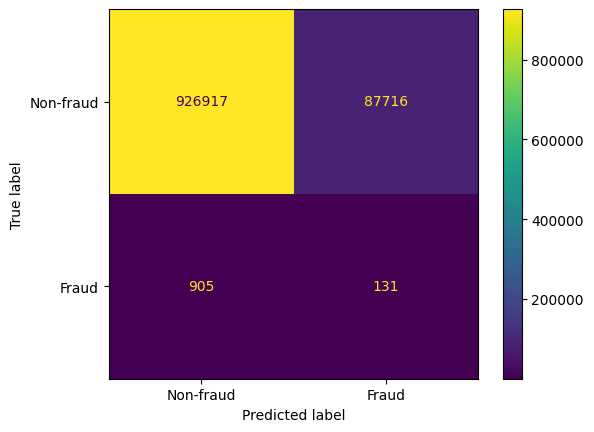
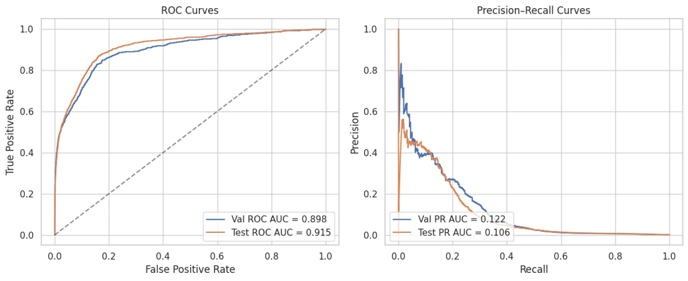

Graph Learning for Anti-Money Laundering
A comparison of transaction-graph models and tabular baselines for detecting rare laundering activity in IBM’s AML dataset.

What does the graph add?
An individual transfer describes one interaction. A graph places it among the other transfers involving those accounts. Our team compared TransformerConv and GINEConv graph neural networks with a multilayer perceptron and an XGBoost baseline.





My contribution
I contributed the XGBoost baseline and evaluation plots. A tabular model gave us a reference point for asking whether the graph representation added predictive information.
Choosing a threshold
Laundering examples are rare in the dataset. The notebooks examine how many positives a model finds when the decision threshold is chosen against a validation false-positive target. That is a different operating point from the threshold that maximizes F1.